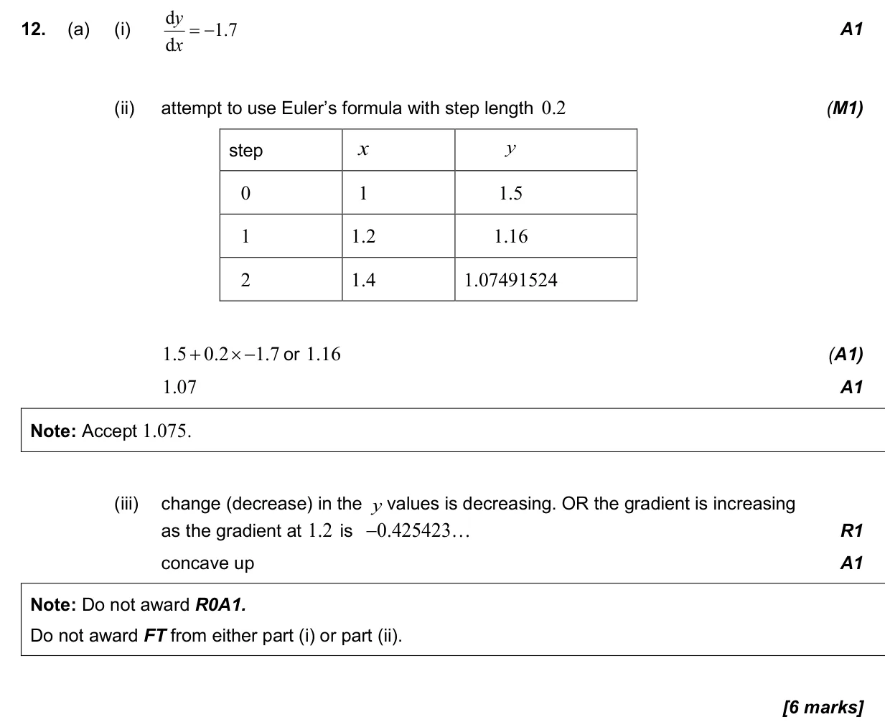
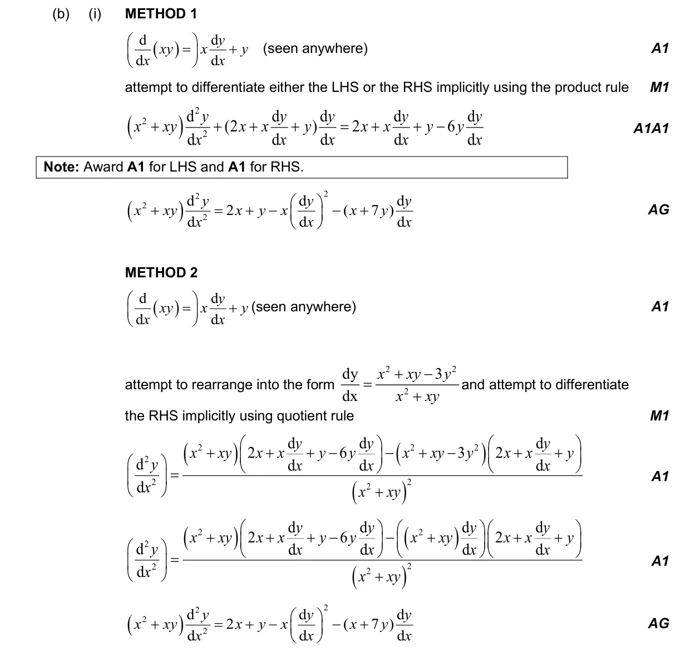
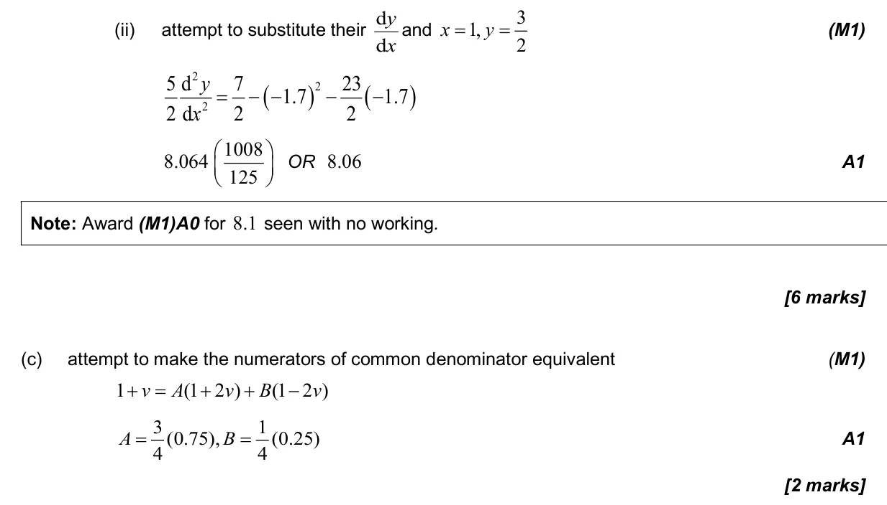
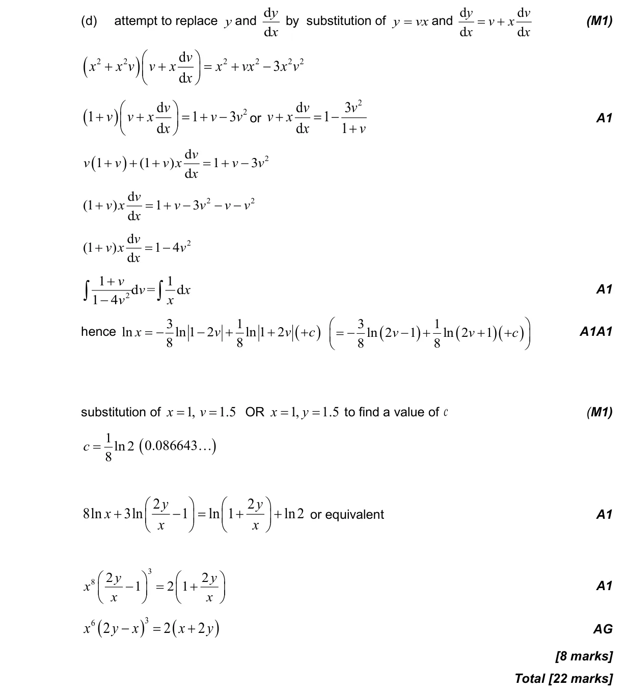

22 marks P2 TZ3 Section B Calculator 5.18 First-order differential equations5.7 The second derivative1.7 Laws of exponents and logarithms5.14 Implicit differentiation, related rates of change and optimisation1.11 Partial fractions Question Hide breakdown abcd Markscheme 